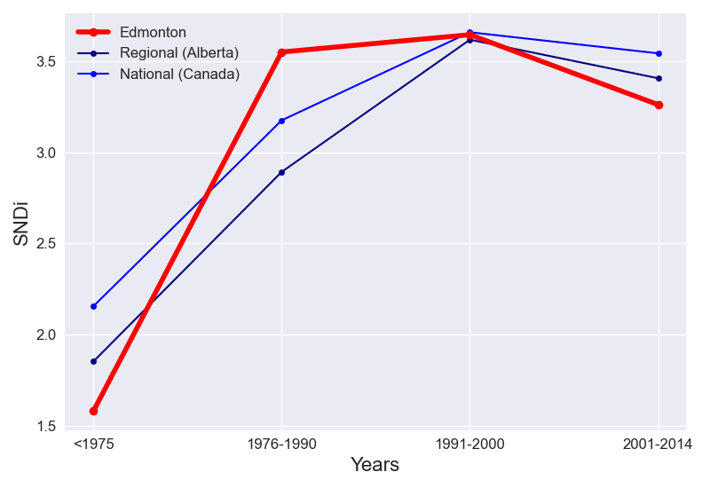

The cumulative and incremental level of street network disconnectivity in Edmonton do not follow the same trend. Cumulative SNDi is increasing steadily over time.
Taking into account all roads in Edmonton, the overall level of street network sprawl is 2.38. In Edmonton, new street layouts initially increased in level of sprawl, until the peak in 1991-2000.
The total level of sprawl in Edmonton is lower than the regional level. Edmonton follows the same trend as Alberta; additions to the street network in each period vary in sprawl levels the same way.
Compared to Canada, the level of sprawl in Edmonton is lower overall. The levels of SNDi in Edmonton and Canada follow the same trend.
To date, Edmonton is the 5th-most disconnected city out of the 6 cities in Alberta. It has maintained its place in the ranks since 1975. In <1975, it ranked 5th, ranked 1st in 1976-1990 and ranked 2nd in 1991-2000 and ranked 2nd in 2001-2014.